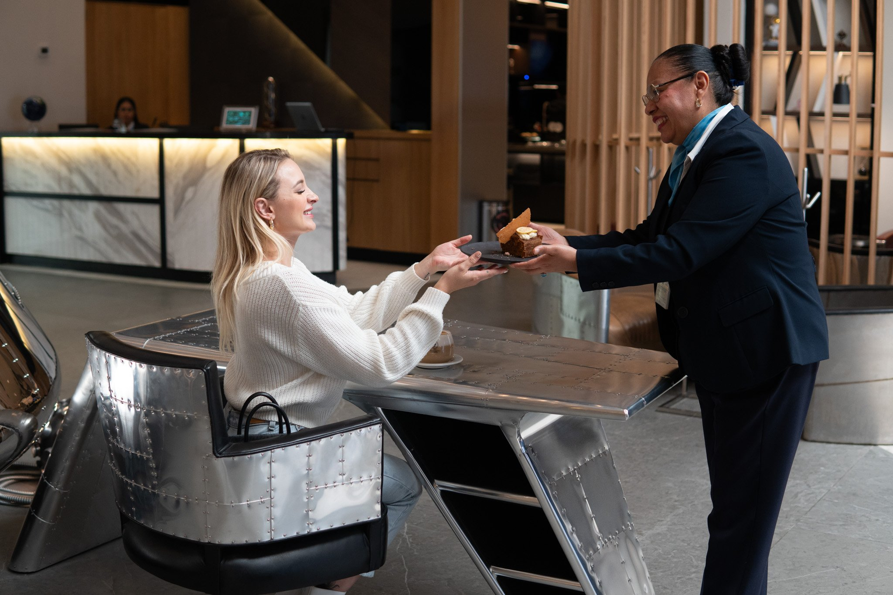
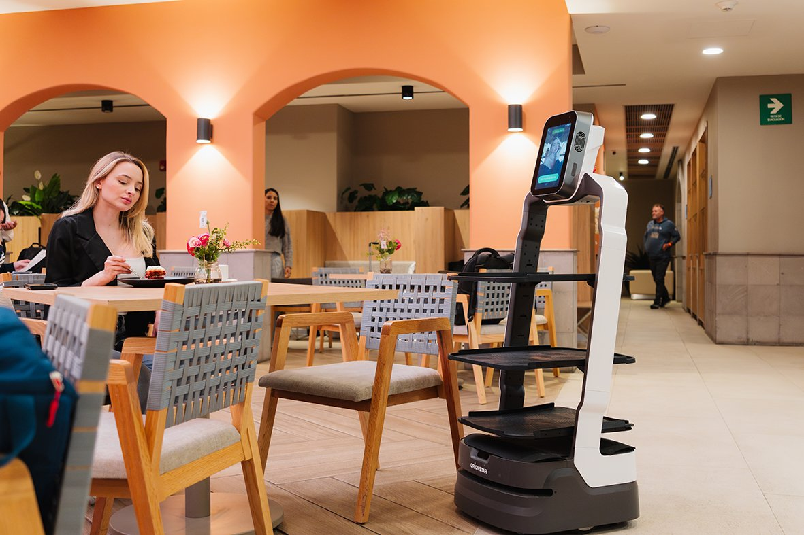
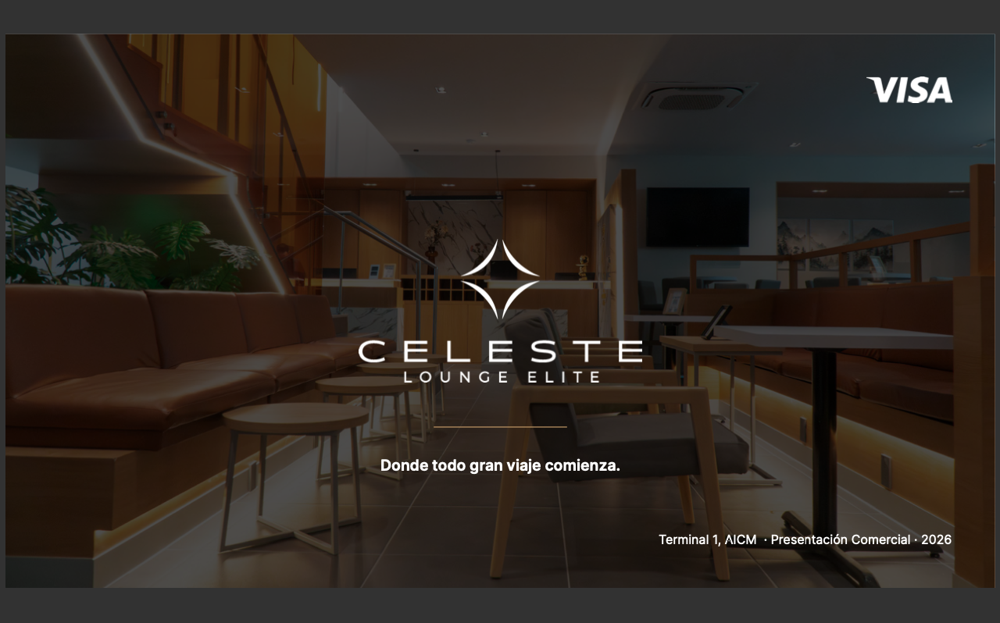
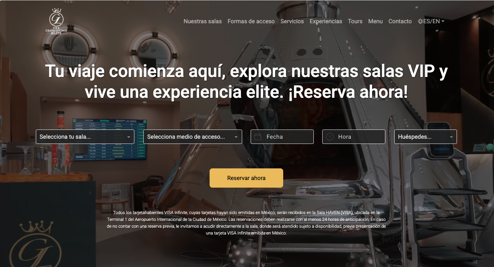

The Grand Lounge Elite opera 5 salas VIP premium…

The Grand Lounge Elite es la red de salas VIP…
El reto era igualar, en cada punto de contacto…
Profesionalizar el manejo de redes sociales…

Rediseñamos la identidad visual de The Grand Lounge Elite desde cero…

Desarrollamos también su sitio web…
Con este trabajo, The Grand Lounge Elite consolidó…
Lounge of the Year 2025
Reconocimiento otorgado por Priority Pass